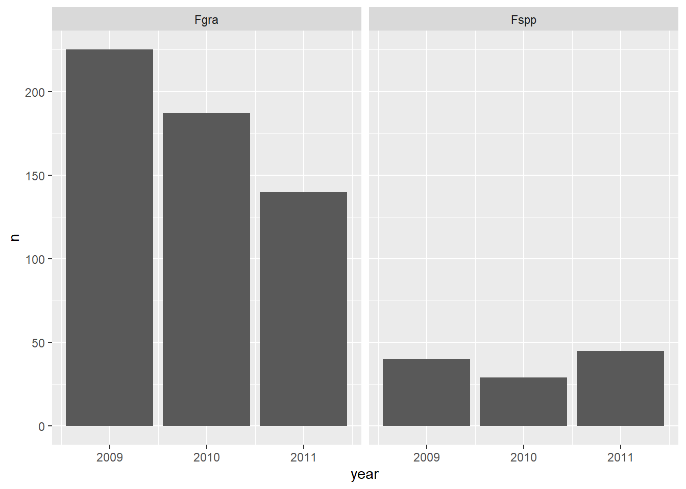
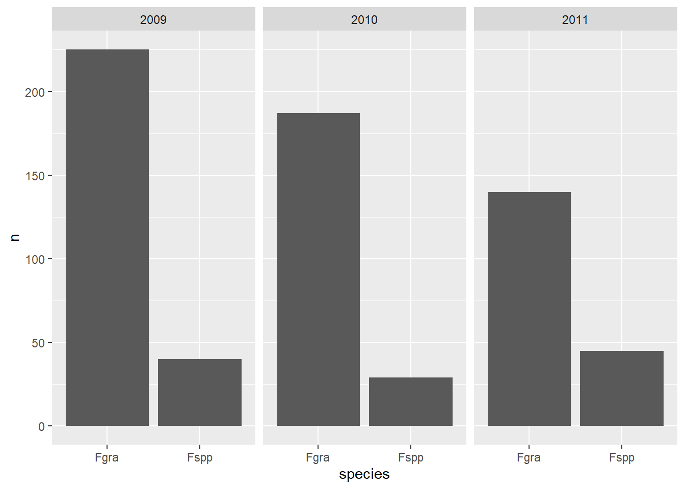
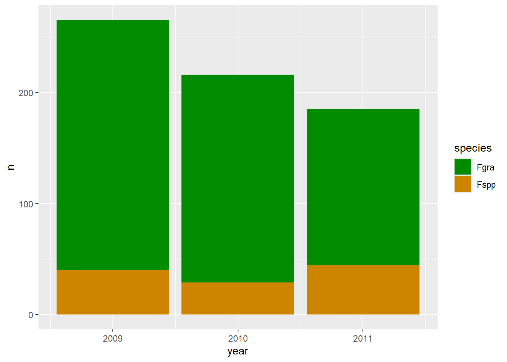

Code
library(agridat)
data(durban.competition)
library(agricolae)
data(sweetpotato)Nesta aula, aprendemos alguns comandos diferentes. Mas o foco principal é aprender como carregar conjuntos de dados no R. Temos 3 formatos principais: pacotes, arquivos de dados - excel ou csv e arquivos de dados em nuvem - planilhas no drive.
Como vimos na aula anterior, o R studio conta com pacotes que possuem diferentes finalidades, alguns deles são pacotes de dados, como o “agridat”, no exemplo abaixo.
Podemos explorar estes pacotes com dados reais/simulados para testar modelos ou rodar análises para treinar mais o aprendizado no R.
library(agridat)
data(durban.competition)
library(agricolae)
data(sweetpotato)Outra maneira de trabalhar é com dados tabelados em excel.
#carregar os pacotes necessários aos comandos para ler as planilhas
#install.packages("readxl")
library(readxl) #Pacote para ler planilhas do excel
library(dplyr)
dados <- read_excel("dados-diversos.xlsx", sheet = "sensibilidade_fungicidas")
dadosstr(dados)tibble [240 × 7] (S3: tbl_df/tbl/data.frame)
$ code : chr [1:240] "FGT05" "FGT05" "FGT05" "FGT05" ...
$ year : num [1:240] 2007 2007 2007 2007 2007 ...
$ trial : num [1:240] 1 1 1 1 1 1 1 1 1 1 ...
$ state : chr [1:240] "RS" "RS" "RS" "RS" ...
$ dose : chr [1:240] "0" "0" "0.05" "0.05" ...
$ replicate : num [1:240] 1 2 1 2 1 2 1 2 1 2 ...
$ germination: num [1:240] 46 44 18 24 9 11 0 0 0 0 ...glimpse(dados) Rows: 240
Columns: 7
$ code <chr> "FGT05", "FGT05", "FGT05", "FGT05", "FGT05", "FGT05", "FGT…
$ year <dbl> 2007, 2007, 2007, 2007, 2007, 2007, 2007, 2007, 2007, 2007…
$ trial <dbl> 1, 1, 1, 1, 1, 1, 1, 1, 1, 1, 1, 1, 1, 1, 1, 1, 1, 1, 1, 1…
$ state <chr> "RS", "RS", "RS", "RS", "RS", "RS", "RS", "RS", "RS", "RS"…
$ dose <chr> "0", "0", "0.05", "0.05", "0.5", "0.5", "1", "1", "5", "5"…
$ replicate <dbl> 1, 2, 1, 2, 1, 2, 1, 2, 1, 2, 1, 2, 1, 2, 1, 2, 1, 2, 1, 2…
$ germination <dbl> 46, 44, 18, 24, 9, 11, 0, 0, 0, 0, 0, 0, 50, 50, 43, 44, 2…#A função glimpse dá uma visão rápida do objeto, mostrando o tipo de cada coluna (ex: número, texto, data), o nome das variáveis, e alguns valores de cada variável.
dados2 <- dados |>
mutate(dose = as.numeric(dose))
#A coluna dados era caractere, aqui usamos a função "mutate" para converter a variável "dose" em valores numéricos
dados2#Para transformar o arquivo .xlsx (excel) em .csv
library(readxl) # para ler .xlsx
# Ler o arquivo .xlsx
dadoscsv <- read_excel("dados-diversos.xlsx")
# Escrever como .csv
write.csv(dados, "dados-diversos_convertido.csv", row.names = FALSE)
# Carrega o pacote
library(readr)
# Ler um arquivo CSV
dados_csv <- read_csv("dados-diversos_convertido.csv")
# Ver os dados
head(dados_csv)dados_csvView(dados_csv)
#Usamos o pacote "writexl" para salvar o arquivo .csv em .xlsx (excel)
library(writexl)
write_xlsx(dados_csv, "dados_csv_convertido.xlsx")
#Para transformar o arquivo .csv em .xlsx (excel)
library(readr) # para ler arquivos .csv
library(writexl) # para salvar arquivos .xlsx
# Ler o arquivo .csv
dados_csv <- read_csv("dados-diversos_convertido.csv")
# Escrever como .xlsx
write_xlsx(dados_csv, "dados_convertido.xlsx")
#para salvar como xl ou csv de dentro do R, cria um novo arquivo
library(writexl)
write_xlsx(dados2, "dados_convertido.xlsx")
write_csv(dados_csv, "dados-diversos_convertido.csv")Podemos trabalhar também com dados diretamente da núvem, sem a necessidade de fazer o download para o seu dispositivo.
Abaixo salvamos como objetos, tres abas diferentes de uma mesma planilha online. Para isso, basta ativar o pacote “gsheet”, nomear o seu objeto e chamar a função gsheet2tbl, colocando o link da aba google entre parenteses e aspas.
#install.packages("gsheet")
library(gsheet)
#para importar da nuvem
dados_nuvem <- gsheet2tbl("https://docs.google.com/spreadsheets/d/1bq2N19DcZdtax2fQW9OHSGMR0X2__Z9T/edit")
dados_mg <- gsheet2tbl("https://docs.google.com/spreadsheets/d/1bq2N19DcZdtax2fQW9OHSGMR0X2__Z9T/edit?gid=1807247585#gid=1807247585")
survey <- gsheet2tbl("https://docs.google.com/spreadsheets/d/1bq2N19DcZdtax2fQW9OHSGMR0X2__Z9T/edit?gid=1118819738#gid=1118819738")
#para contar as variáveis
survey |>
group_by(state) |>
count()#para contar espécies
survey |>
group_by(species) |>
count()#para contar os resíduos
survey |>
group_by(residue) |>
count()#juntar dois calculos
survey |>
group_by(state, residue) |>
count()#para separar apenas os dados que desejar,"filter" é usado para linhas, enquanto "select" é usado para colunas
RS <- survey |>
filter(state == "RS")
PR <- survey |>
filter(state == "PR")
#passo inverso do anterior, agora unir ou selecionar apenas o que desejar
combinado <- rbind(RS, PR)
#para selecionar apenas as colunas desejadas e já deixar em conjunto
survey_b <- survey |>
dplyr::select(year, state, species)
#separar apenas 2009
survey_2009 <- survey |>
dplyr::select(year, state, species) |>
filter(year == 2009)
survey_2011 <- survey |>
dplyr::select(year, state, species) |>
filter(year == 2011)#para sumarizar dados e criar uma tabela de contingencia ou de frequencia de ocorrencia
#install.packages("janitor")
library(janitor)
#montando a tabela de contingencia
survey_b |>
tabyl(state, species, year)$`2009`
state Fgra Fspp
PR 92 31
RS 133 9
$`2010`
state Fgra Fspp
PR 0 0
RS 187 29
$`2011`
state Fgra Fspp
PR 58 35
RS 82 10#por ano
survey_b |>
tabyl(year, species)#para plotar por espécies
library(ggplot2)
#pode usar geom_col para criar gráficos de barras
survey_b |>
group_by(year, species) |>
count() |>
ggplot(aes(year, n))+
geom_col()+
facet_wrap(~species)
#para dois gráficos em um mesmo x usa-se o comando acima, facet_wrap
#oara plotar por ano
survey_b |>
group_by(year, species) |>
count() |>
ggplot(aes(species, n))+
geom_col()+
facet_wrap(~year)
#para editar separado por cores, mas num mesmo gráfico
survey_b |>
group_by(year, species) |>
count()|>
ggplot(aes(year, n, fill = species))+
geom_bar(stat = "identity")#mesma função acima, mas usando o geom_col
survey_b |>
group_by(year, species) |>
count()|>
ggplot(aes(year, n, fill = species))+
geom_col(stat = "identity")
#para mudar a escala, preenchiemto e cor
survey_b |>
group_by(year, species) |>
count() |>
ggplot(aes(year, n, fill = species))+
geom_col(stat = "identity")+
scale_fill_manual(values = c("green4", "orange3"))
#scale_fill_viridis_d para a cor automático
survey_b |>
group_by(year, species) |>
count() |>
ggplot(aes(year, n, fill = species,
color = species))+
geom_col()+
#scale_fill_manual(values = c ("red", "blue")+
#scale_fill_grey()+
scale_color_viridis_d()
#carrega os pacotes necessários
#install.packages("ggthemes")
#install.packages("ggplot2")
library(ggplot2)
library(ggthemes)
#adiciona vários temas prontos e estilos de gráficos novos, além dos presentes no pacote ggplot2
#cria um objeto com o conjunto de dados que você vai utilizar, no exemplo da aula, utilizamos a aba de dados Magnesio, na planilha de dados-diversos, disponibilizada pelo professor. Esta mesma planilha foi utilizada nos demais exemplos desta aula.
mg <- gsheet2tbl("https://docs.google.com/spreadsheets/d/1bq2N19DcZdtax2fQW9OHSGMR0X2__Z9T/edit?gid=983033137#gid=983033137")
mg#O conjunto de dados é formado por trat, rep e comp.
#para plotar e editar as infos do grafico
mg |>
ggplot(aes(trat, comp))+
geom_boxplot(fill = "darkorange",
outlier.colour = NA)+
geom_jitter(width = 0.1, color = "gray20")+
scale_y_continuous(limits = c (0,20))+
labs(x = "Tratamento",
y = "Comprimento (mm)")+
theme_classic(base_size = 14)#comando para salvar o gráfico em imagem
ggsave("box.png", bg = "white")
#Ajustando as escalas de saida
ggsave("box.png", bg = "white", width = 5, height = 5)
#para salvar e editar informações no gráfico, como legendas, títulos, fonte.
#install.packages("ggthemes")
library(ggthemes)
mg |>
ggplot(aes(trat, comp))+
geom_boxplot(fill = "lightblue", #aciona o boxplot
outlier.colour = NA)+ #comando para apagar" outlier
geom_jitter(width = 0.1, color = "gray20")+ #evita pontos sobrepostos
scale_y_continuous(limits = c (5,20))+ #mostrar pontos, é preferível em relação à barras
labs(x = "Tratamento",
y = "Comprimento (mm)", title = "Efeito de Mg",
subtitle = "Tamanho da lesão da mancha parda",
caption = "fonte (F. A, Rodrigues et al. 2020)")+
theme_clean(base_size = 14)ggsave("box.png", bg = "white", width = 5, height = 5)
#plotando um segundo exemplo de gráfico
library(gsheet)
library(ggthemes)
library(ggplot2)
micelial <- gsheet2tbl("https://docs.google.com/spreadsheets/d/1bq2N19DcZdtax2fQW9OHSGMR0X2__Z9T/edit?gid=959387827#gid=959387827")
micelialmicelial|>
ggplot(aes(reorder(especie, tcm), tcm))+
geom_boxplot(outlier.colour = NA, fill = "orange2")+
geom_jitter(width = 0.1, color = "gray10")+
coord_flip()+ #inverte as coordenadas
labs(x = "Espécie",
y = "Taxa de crescimento micelial (mm/dia)")+
theme_clean() #muda o tema de fundo#Instala o pacote necessário para a essa combinação. O pacote "patchwork".
#install.packages("patchwork")
library(patchwork)
#grafico 1
plot_mg <- mg |>
ggplot(aes(trat, comp))+
geom_boxplot(fill = "aquamarine3",
outlier.colour = NA)+
geom_jitter(width = 0.1, color = "black")+
scale_y_continuous(limits = c (5,20))+
labs(x = "Tratamento",
y = "Comprimento (mm)", title = "Efeito de Mg",
subtitle = "Tamanho da lesão da mancha parda",
caption = "fonte (F. A, Rodrigues et al. 2020)")+
theme_clean(base_size = 14)
#gráfico 2
plot_micelial <- micelial|>
ggplot(aes(reorder(especie, tcm), tcm))+
geom_boxplot(outlier.colour = NA, fill = "orange2")+
geom_jitter(width=0.1, color = "gray10")+
coord_flip()+
labs(x = "Especie", y = "taxa de crescimento micelial (mm/dia)", title = "Crescimento micelial")+
theme_clean()+theme(plot.title = element_text(face = "italic"))# para deixar o texto em itálico
#plotando os gráficos lado a lado
plot_mg + plot_micelial #plotando os gráficos um acima do outro, separando em gráfico A e B
(plot_mg /plot_micelial)+
plot_annotation(tag_levels = "A") #para editar ao salvar
ggsave("combo1.png", bg = "white",
width = 8, height = 4)